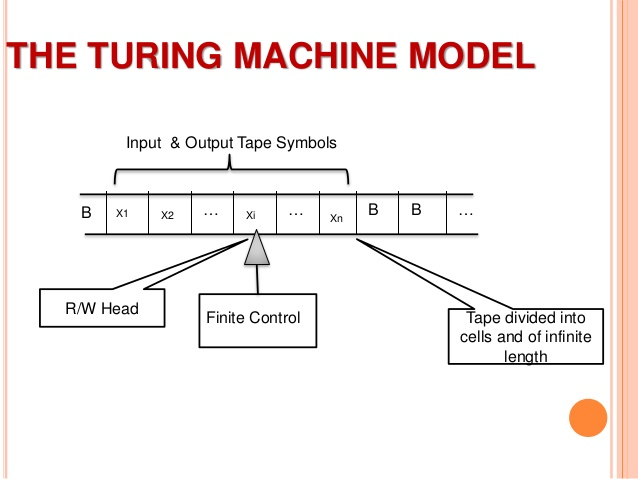

Application of Turing Machine in
Encryption & Decryption
Department of Information & Technology , U.I.E.T
Almost all known cryptographic constructions for computing on encrypted data model algorithms as circuits instead of Turing machines. There are at least two unfortunate consequences of modeling algorithms as circuits.
1. The first consequence of using circuits is that evaluating an algorithm A on encrypted data is at least as slow as the worst-case running time of algorithm A on all inputs of a certain size. Ideally, the runtime of A on input x should be the time A takes to run on x. The reason for this slowdown is that all the known transformations from Turing machines to circuits essentially work by unrolling loops to their worst-case runtime, and by considering all branches of a computation.
2. The second consequence is that the size of the token is as large as the running time of the algorithm, instead of depending only on the description of the algorithm, which can be much shorter. Since the evaluator can compute a Turing machine M in input-specific runtime, it means that the evaluator necessarily learns the runtime of M on specific inputs.
Cryptography is the practice and study of hiding information. In cryptography , encryption is the process of transforming information (referred to as plain text) using an algorithm (called cipher) to make it unreadable to anyone except those possessing special knowledge, usually referred to as a key. The result of the process is encrypted information (in cryptography, referred to as cipher text).
 The machine can be described as a finite state control device (meaning that it has a finite number of states that control its operations), with a tape of unlimited length, divided into squares, upon which symbols may be written or stored.
A sequence of actions can take place when a symbol is scanned by a read/write head and the machine is in a certain state. The sequence of actions is the "program."
At any point in time, the finite state control will be in one state and the tape head will be scanning a single symbol, or square, on the tape. On the basis of this symbol and the current state, it will write a symbol on the square, or choose to leave the symbol alone, move the tape one square to the left or the right, and change to a "new" state. All this constitutes a "move" of the basic machine.
A TM can be formally described as a 7-tuple
(Q, X, ∑, δ, q0, B, F) where : −
Q is a finite set of states
X is the tape alphabet
∑ is the input alphabet
δ is a transition function;
δ : Q × X → Q × X × {Left_shift, Right_shift}.
q0 is the initial state
B is the blank symbol
F is the set of final states
Now lets see how the algorithm works. As seen earlier, the algorithm works using the basic working of the Turing machine itself. Here, the data to be encrypted is taken in a string and then converted into a character array. Then, the Turing machine principle is applied to the array, considering the array as the tape of the machine, with the array elements correspondingto the tape cells. Then, the Turing machine can be applied.
Here, we use a 5-tuple.
The elements are:
< istate, input, ostate, replace, shift >
This year our profit is six million
10100010000100110011Δ11001001010000110010Δ
011111010110010Δ10000100100111100110010Δ
01101000100110011Δ100110100111000Δ
01101010010110001100010010111101110ΔΔΔΔΔΔΔΔΔΔ
Now we send this encrypted string at our destination and then we decrypt it back to its original form using the static decryptor that uses a simple decryption scheme.
Post-Turing instruction-abbreviations used for this example
10100010000100110011Δ11001001010000110010Δ
011111010110010Δ10000100100111100110010Δ
01101000100110011Δ100110100111000Δ
01101010010110001100010010111101110ΔΔΔΔΔΔΔΔΔΔ
This year our profit is six million
In this , we use a dynamic encryption scheme in which we replace the symbol with its replica but we also insert a small amount of garbage in it so that it is not easy to recognize the original message.
Vanguard six this is bravo one we are ready
10110@*^$(00001>"{^$01110&%+<#00111,.;/]00001}:">*10101@$#&^10010.[;',00100Δ10011$^#*%01001!)(&^110 00Δ10100!)*%*01000!^%&%01001<:{(&10011Δ01001)*^$@10011Δ00010<>)(^10010*)^$*00001*&*%$10110_)(&*0 1111Δ01111<>?:"01110$%^#@00101Δ10111*(&%*00101Δ00001;'[].10010$%#^%00101Δ10010@#$#@00101(^*%#00 001;'[].00100$&#*%11001(^*%#00001;'[]!ΔΔΔΔΔΔΔΔΔΔ
In this , we use a dynamic encryption scheme in which we replace the symbol with its replica but we also insert a small amount of garbage in it so that it is not easy to recognize the original message.
Vanguard six this is bravo one we are ready
10110@*^$(00001>"{^$01110&%+<#00111,.;/]00001}:">*10101@$#&^10010.[;',00100Δ10011$^#*%01001!)(&^110 00Δ10100!)*%*01000!^%&%01001<:{(&10011Δ01001)*^$@10011Δ00010<>)(^10010*)^$*00001*&*%$10110_)(&*0 1111Δ01111<>?:"01110$%^#@00101Δ10111*(&%*00101Δ00001;'[].10010$%#^%00101Δ10010@#$#@00101(^*%#00 001;'[].00100$&#*%11001(^*%#00001;'[]!ΔΔΔΔΔΔΔΔΔΔ
Post-Turing instruction-abbreviations used for this example:
Different background transitions are available via the backgroundTransition option. This one's called "zoom".
Reveal.configure({ backgroundTransition: 'zoom' })You can override background transitions per-slide.
<section data-background-transition="zoom">
function linkify( selector ) {
if( supports3DTransforms ) {
var nodes = document.querySelectorAll( selector );
for( var i = 0, len = nodes.length; i < len; i++ ) {
var node = nodes[i];
if( !node.className ) {
node.className += ' roll';
}
}
}
}
Code syntax highlighting courtesy of highlight.js.
| Item | Value | Quantity |
|---|---|---|
| Apples | $1 | 7 |
| Lemonade | $2 | 18 |
| Bread | $3 | 2 |
These guys come in two forms, inline:
“The nice thing about standards is that there are so many to choose from”
and block:
“For years there has been a theory that millions of monkeys typing at random on millions of typewriters would reproduce the entire works of Shakespeare. The Internet has proven this theory to be untrue.”
You can link between slides internally, like this.
There's a speaker view. It includes a timer, preview of the upcoming slide as well as your speaker notes.
Press the S key to try it out.
Presentations can be exported to PDF, here's an example:
Set data-state="something" on a slide and "something"
will be added as a class to the document element when the slide is open. This lets you
apply broader style changes, like switching the page background.
Additionally custom events can be triggered on a per slide basis by binding to the data-state name.
Reveal.addEventListener( 'customevent', function() {
console.log( '"customevent" has fired' );
} );
Press B or . on your keyboard to pause the presentation. This is helpful when you're on stage and want to take distracting slides off the screen.